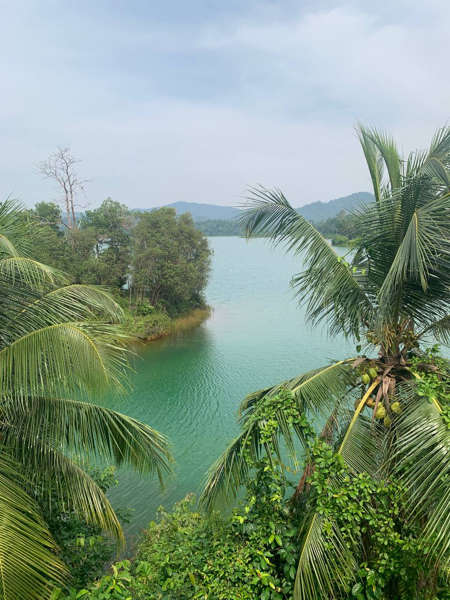
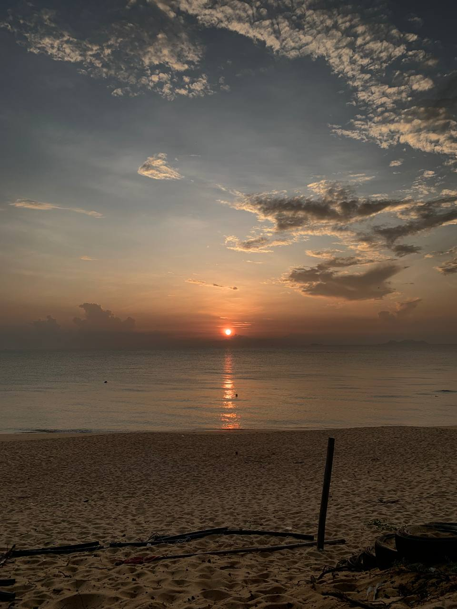
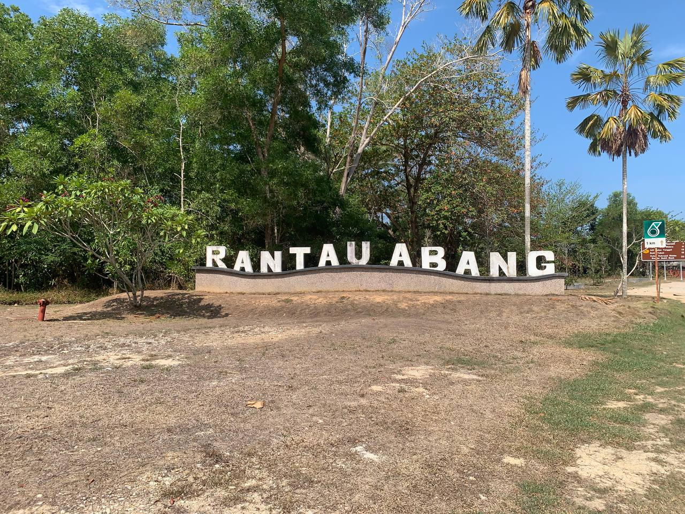

Hello! My name is Alyani. I am a Computer Science student at Universiti Malaysia Terengganu (UMT). I enjoy learning new things and exploring technology.
In my free time, I enjoy doing things that make me happy. My hobbies help me relax, have fun, and try new experiences. I love listening to music, watching movies, and taking photos of beautiful places. I also enjoy spending time in nature and going on motorcycle rides to explore new places. Each hobby gives me a different kind of happiness and makes my free time more meaningful.
I love riding my motorcycle and exploring beautiful places surrounded by nature. These adventures make me feel free, peaceful, and happy.





Visit YouTube to listen to music and watch videos.